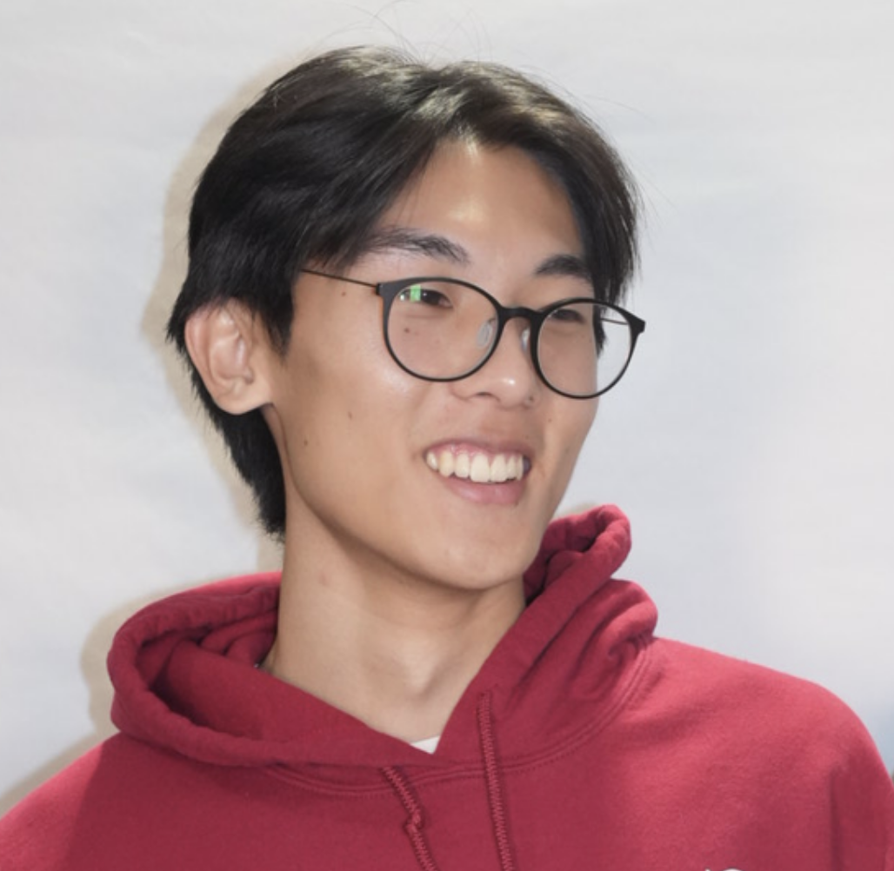
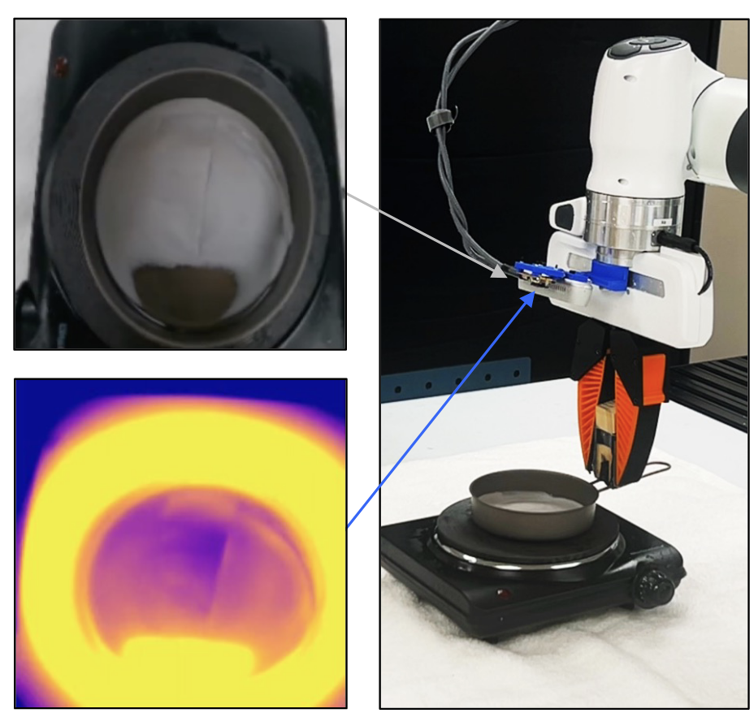
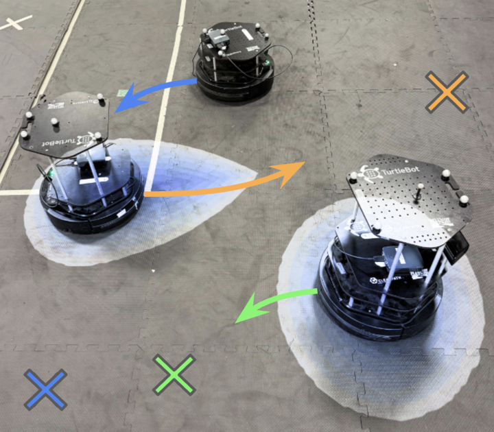
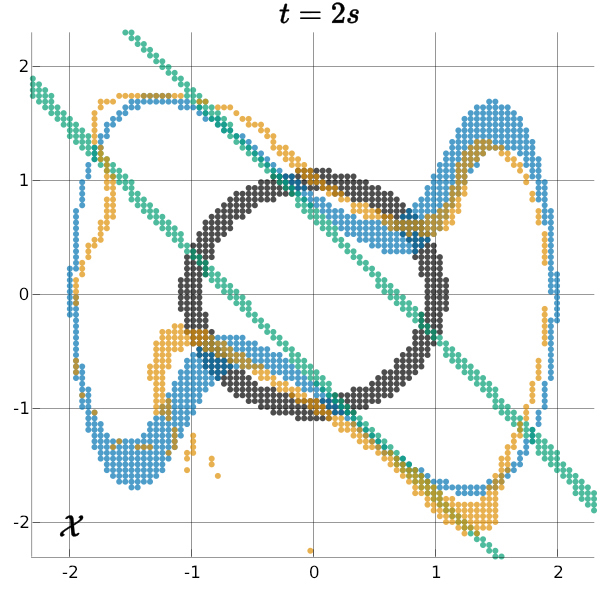

|
Matthew Kim
Hello!
I'm an undergraduate student pursuing a Computer Science major and Applied Mathematics minor at UC
San Diego (UCSD), where I am also a researcher in Sylvia Herbert's
Safe Autonomous Systems Lab.
I am currently working in Andrea Bajcsy's
Intent Lab
at Carnegie Mellon University.
My interests lie in deep learning algorithms for
both safe robotics and multi-agent games. My research thus far has
primarily involved developing neural safety filters for
autonomous systems.
I will be applying to PhD programs beginning in Fall 2026.
[
mak009 [at] ucsd [dot] edu /
CV /
Scholar
/
Github /
LinkedIn
]
|

|
|

|
What You Don't Know Can Hurt You
Matthew Kim*, Kensuke Nakamura*, Andrea Bajcsy
Submitted, Sep 2025
[paper /
website]
Investigated how partial observability manifests in latent safety filters.
|
|

|
Reachability Barrier Networks
Matthew Kim, Will Sharpless, Hyun Joe Jeong, Sander Tonkens, Somil Bansal, Sylvia Herbert
Submitted, Apr 2025
[paper /
video /
poster]
Learned Hamilton-Jacobi solutions to approximate smooth and flexible CBFs for general non-linear
autonomous systems.
|
|

|
Koopman-Hopf Hamilton-Jacobi Reachability and Control
Will Sharpless, Nikhil Shinde, Matthew Kim, Yat Tin Chow, Sylvia Herbert
Arxiv Preprint, Nov 2023
[paper]
Leveraged Koopman linearizations and the Hopf formula to obtain a performant algorithm for high-dimensional, nonlinear autonomy.
|
|
{kind=link}